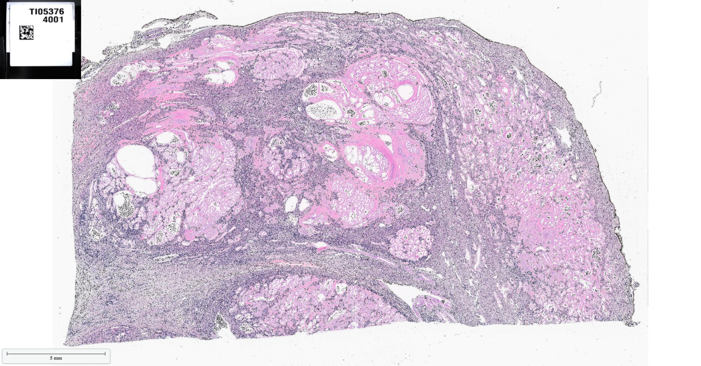
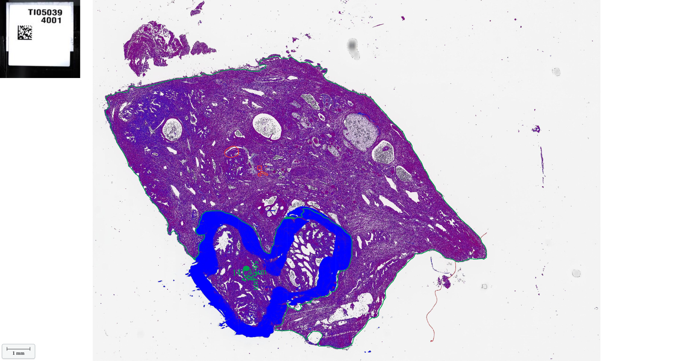

Pathology Imaging AI/ML
Annotated Slides Galley
1 / 3

Caption Text
2 / 3
Caption Two
3 / 3

Caption Three
❮
❯
Pre-Annotated Image Uploading
Select Input Pre_label_Image File:
*
Select Annotation File: (optional)
Select ML Classifer:
*
Visulization Options
Scaling
Cell-Area
Count (# of Cells)
Layers
Range:
-
Load Figure
Link to GMSview
Document: Genomics - Molecular Biology - System Biology Analyzing Suite